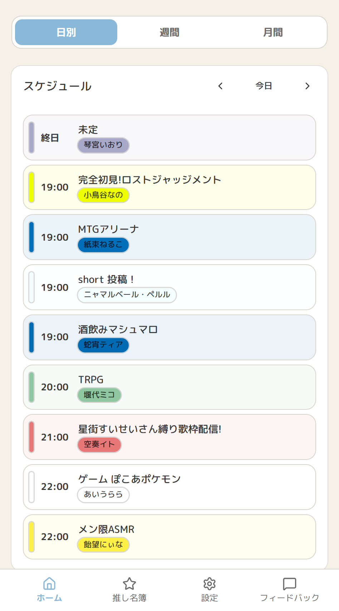
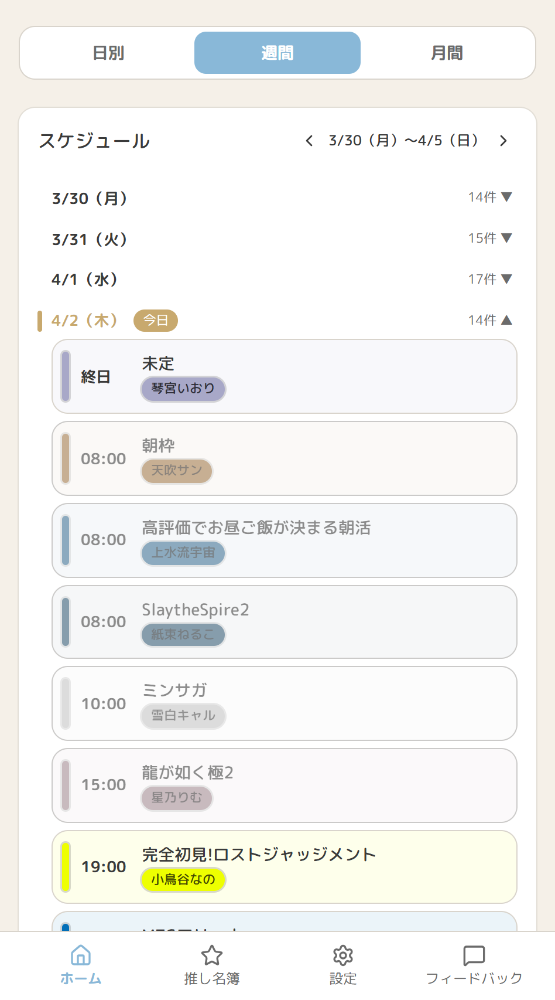
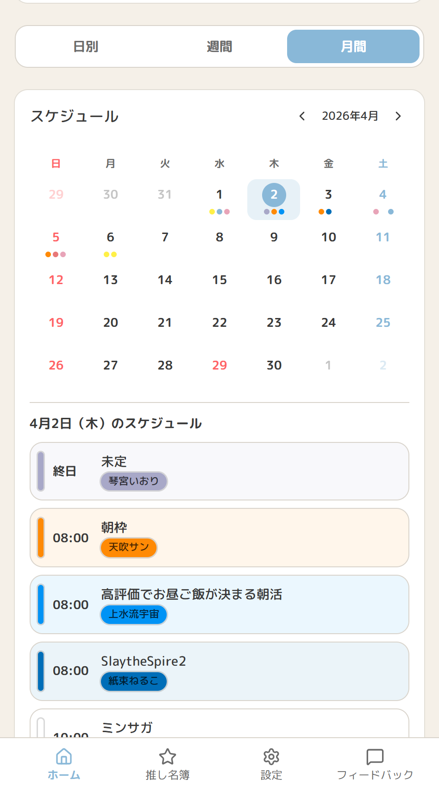
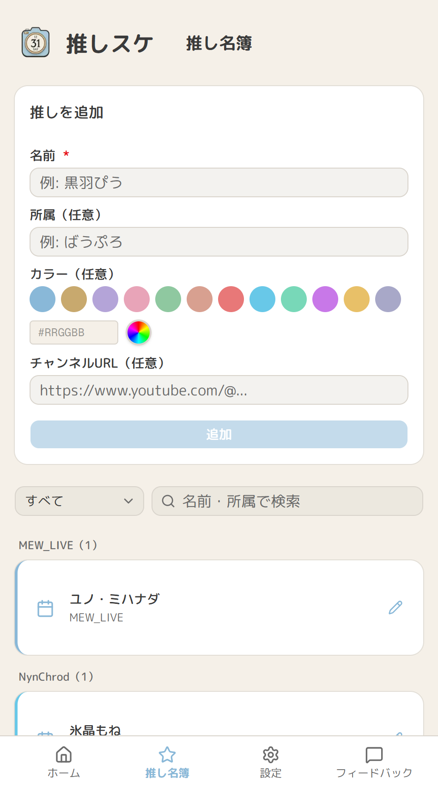
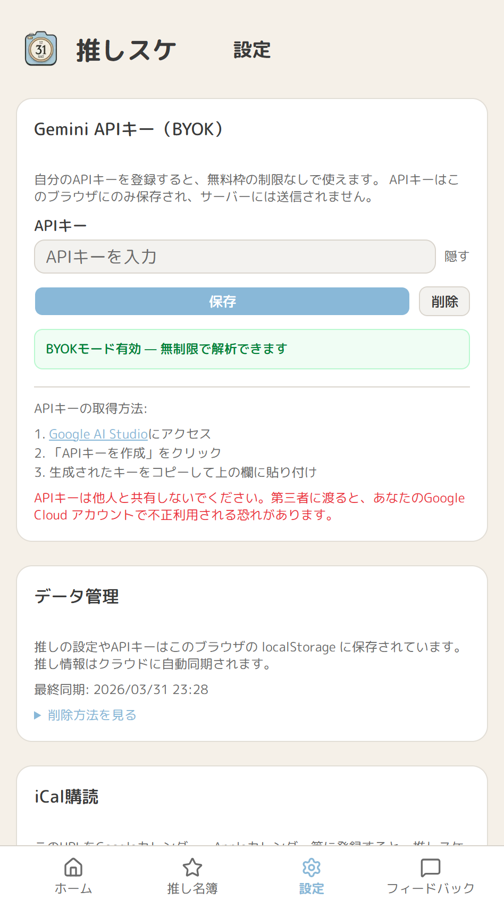

無料で公開中 / ゲスト利用可能
推しスケ
配信スケジュール画像からAIが予定を読み取り、日・週・月ごとに表示します。
Googleでログインすると、登録した予定をGoogleカレンダーやiOSのカレンダーからも購読できます。
- 種類
- Webアプリ / PWA
- 利用方法
- ゲストまたはGoogleアカウント
- 技術
- Next.js 16 / Tailwind CSS v4 / Gemini 2.5 Flash / Auth.js v5 / Upstash Redis / Vercel

画面


今日の配信予定を一覧で確認できます。


一週間の予定と今日の予定をまとめて見ることができます。


日付を選び、その日の予定を確認できます。


所属、担当カラー、記念日等を管理できます。


APIキー、iCal購読、利用状況、データ削除をまとめています。
できること
- 画像をAIで解析
配信タイトル、日付、開始時刻を画像から読み取ります。
解析結果を利用者が確認してから予定へ登録します。
- 日・週・月表示
今日の予定から月全体まで、確認したい範囲に切り替えて表示できます。
- 推し名簿
推しを所属ごとに整理できます。
設定した推しカラーは予定にも表示されるため、一覧から見つけやすくなります。
- iCal購読
Googleでログインすると、購読用のURLを発行できます。
特定のカレンダーサービスに依存せず、Googleカレンダー、Appleカレンダー、Outlookなどから予定を購読できます。
- ゲストモード
ログインせずに実際のアプリを試せます。
ゲストの予定は利用中の端末内へ保存します。
- 無料枠とBYOK
無料枠の条件は「推しスケとは？」↗に記載しています。
自分のGemini APIキーを登録すれば、推しスケ側の枚数制限を受けずに解析できます。